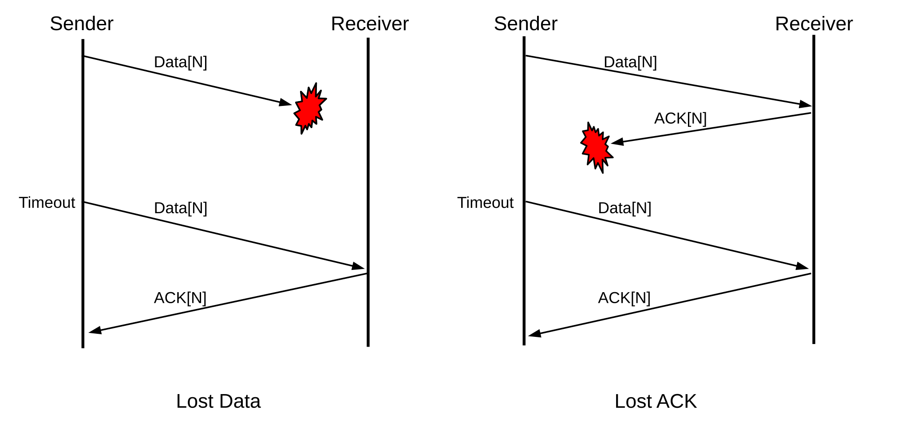
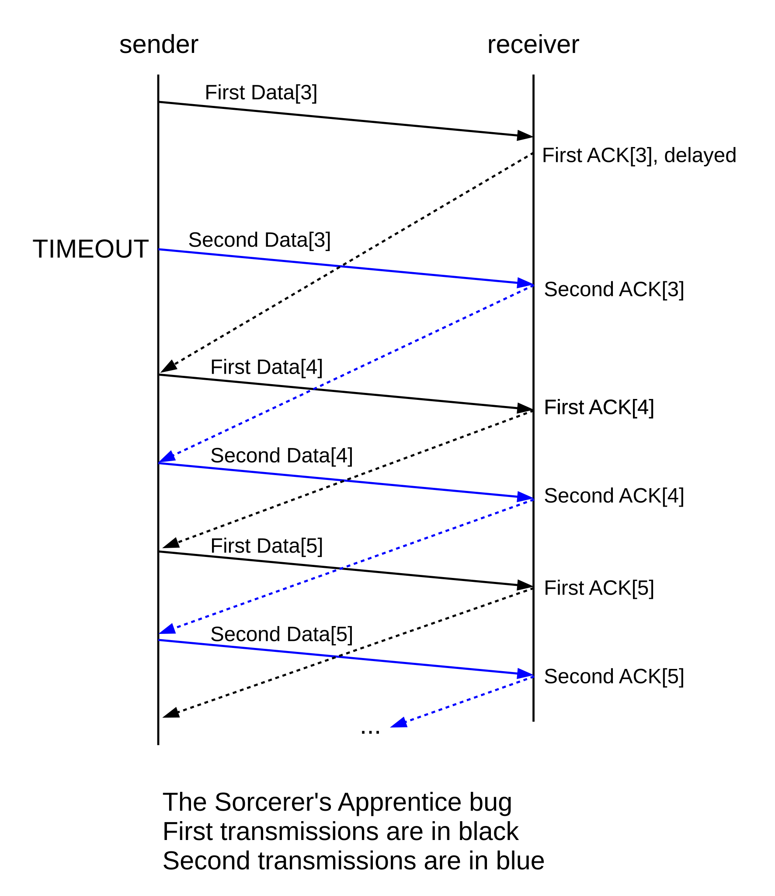
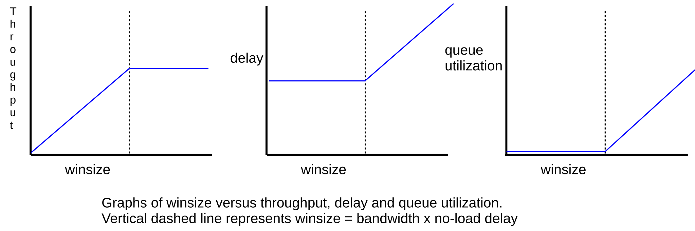
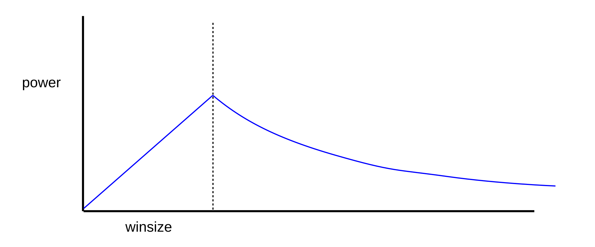

8 Abstract Sliding Windows¶
In this chapter we take a general look at how to build reliable data-transport layers on top of unreliable lower layers. This is achieved through a retransmit-on-timeout policy; that is, if a packet is transmitted and there is no acknowledgment received during the timeout interval then the packet is resent. As a class, protocols where one side implements retransmit-on-timeout are known as ARQ protocols, for Automatic Repeat reQuest.
In addition to reliability, we also want to keep as many packets in transit as the network can support. The strategy used to achieve this is known as sliding windows. It turns out that the sliding-windows algorithm is also the key to managing congestion; we return to this in 19 TCP Reno and Congestion Management.
The End-to-End principle, 17.1 The End-to-End Principle, suggests that trying to achieve a reliable transport layer by building reliability into a lower layer is a misguided approach; that is, implementing reliability at the endpoints of a connection – as is described here – is in fact the correct mechanism.
8.1 Building Reliable Transport: Stop-and-Wait¶
Retransmit-on-timeout generally requires sequence numbering for the packets, though if a network path is guaranteed not to reorder packets then it is safe to allow the sequence numbers to wrap around surprisingly quickly (for stop-and-wait, a single-bit sequence number will work; see exercise 8.5). However, as the no-reordering hypothesis does not apply to the Internet at large, we will assume conventional numbering. Data[N] will be the Nth data packet, acknowledged by ACK[N].
In the stop-and-wait version of retransmit-on-timeout, the sender sends only one outstanding packet at a time. If there is no response, the packet may be retransmitted, but the sender does not send Data[N+1] until it has received ACK[N]. Of course, the receiving side will not send ACK[N] until it has received Data[N]; each side has only one packet in play at a time. In the absence of packet loss, this leads to the following:
8.1.1 Packet Loss¶
Lost packets, however, are a reality. The left half of the diagram below illustrates a lost Data packet, where the sender is the host sending Data and the Receiver is the host sending ACKs. The receiver is not aware of the loss; it sees Data[N] as simply slow to arrive.

The right half of the diagram, by comparison, illustrates the case of a lost ACK. The receiver has received a duplicate Data[N]. We have assumed here that the receiver has implemented a retransmit-on-duplicate strategy, and so its response upon receipt of the duplicate Data[N] is to retransmit ACK[N].
As a final example, note that it is possible for ACK[N] to have been delayed (or, similarly, for the first Data[N] to have been delayed) longer than the timeout interval. Not every packet that times out is actually lost!
In this case we see that, after sending Data[N], receiving a delayed ACK[N] (rather than the expected ACK[N+1]) must be considered a normal event.
In principle, either side can implement retransmit-on-timeout if nothing is received. Either side can also implement retransmit-on-duplicate; this was done by the receiver in the second example above but not by the sender in the third example (the sender received a second ACK[N] but did not retransmit Data[N+1]).
At least one side must implement retransmit-on-timeout; otherwise a lost packet leads to deadlock as the sender and the receiver both wait forever. The other side must implement at least one of retransmit-on-duplicate or retransmit-on-timeout; usually the former alone. If both sides implement retransmit-on-timeout with different timeout values, generally the protocol will still work.
8.1.2 Sorcerer’s Apprentice Bug¶
A strange thing happens if one side implements retransmit-on-timeout but both sides implement retransmit-on-duplicate, as can happen if the implementer takes the naive view that retransmitting on duplicates is “safer”; the moral here is that too much redundancy can be the Wrong Thing. Let us imagine that an implementation uses this strategy (with the sender retransmitting on timeouts), and that the initial ACK[3] is delayed until after Data[3] is retransmitted on timeout. In the following diagram, the only packet retransmitted due to timeout is the second Data[3]; all the other duplications are due to the bilateral retransmit-on-duplicate strategy.

All packets are sent twice from Data[3] on. The transfer completes normally, but takes double the normal bandwidth. The usual fix is to have one side (usually the sender) retransmit on timeout only. TCP does this; see 18.12 TCP Timeout and Retransmission. See also exercise 2.0.
8.1.3 Flow Control¶
Stop-and-wait also provides a simple form of flow control to prevent data from arriving at the receiver faster than it can be handled. Assuming the time needed to process a received packet is less than one RTT, the stop-and-wait mechanism will prevent data from arriving too fast. If the processing time is slightly larger than RTT, all the receiver has to do is to wait to send ACK[N] until Data[N] has not only arrived but also been processed, and the receiver is ready for Data[N+1].
For modest per-packet processing delays this works quite well, but if the processing delays are long it introduces a new problem: Data[N] may time out and be retransmitted even though it has successfully been received; the receiver cannot send an ACK until it has finished processing. One approach is to have two kinds of ACKs: ACKWAIT[N] meaning that Data[N] has arrived but the receiver is not yet ready for Data[N+1], and ACKGO[N] meaning that the sender may now send Data[N+1]. The receiver will send ACKWAIT[N] when Data[N] arrives, and ACKGO[N] when it is done processing it.
Presumably we want the sender not to time out and retransmit Data[N] after ACKWAIT[N] is received, as a retransmission would be unnecessary. This introduces a new problem: if the subsequent ACKGO[N] is lost and neither side times out, the connection is deadlocked. The sender is waiting for ACKGO[N], which is lost, and the receiver is waiting for Data[N+1], which the sender will not send until the lost ACKGO[N] arrives. One solution is for the receiver to switch to a timeout model, perhaps until Data[N+1] is received.
TCP has a fix to the flow-control problem involving sender-side polling; see 18.10 TCP Flow Control.
8.2 Sliding Windows¶
Stop-and-wait is reliable but it is not very efficient (unless the path involves neither intermediate switches nor significant propagation delay; that is, the path involves a single LAN link). Most links along a multi-hop stop-and-wait path will be idle most of the time. During a file transfer, ideally we would like zero idleness (at least along the slowest link; see 8.3 Linear Bottlenecks).
We can improve overall throughput by allowing the sender to continue to transmit, sending Data[N+1] (and beyond) without waiting for ACK[N]. We cannot, however, allow the sender get too far ahead of the returning ACKs. Packets sent too fast, as we shall see, simply end up waiting in queues, or, worse, dropped from queues. If the links of the network have sufficient bandwidth, packets may also be dropped at the receiving end.
Now that, say, Data[3] and Data[4] may be simultaneously in transit, we have to revisit what ACK[4] means: does it mean that the receiver has received only Data[4], or does it mean both Data[3] and Data[4] have arrived? We will assume the latter, that is, ACKs are cumulative: ACK[N] cannot be sent until Data[K] has arrived for all K≤N. With this understanding, if ACK[3] is lost then a later-arriving ACK[4] makes up for it; without it, if ACK[3] is lost the only recovery is to retransmit Data[3].
The sender picks a window size, winsize. The basic idea of sliding windows is that the sender is allowed to send this many packets before waiting for an ACK. More specifically, the sender keeps a state variable last_ACKed, representing the last packet for which it has received an ACK from the other end; if data packets are numbered starting from 1 then initially last_ACKed = 0.
At any instant, the sender may send packets numbered last_ACKed + 1 through last_ACKed + winsize; this packet range is known as the window. Generally, if the first link in the path is not the slowest one, the sender will most of the time have sent all these.
If ACK[N] arrives with N > last_ACKed (typically N = last_ACKed+1), then the window slides forward; we set last_ACKed = N. This also increments the upper edge of the window, and frees the sender to send more packets. For example, with winsize = 4 and last_ACKed = 10, the window is [11,12,13,14]. If ACK[11] arrives, the window slides forward to [12,13,14,15], freeing the sender to send Data[15]. If instead ACK[13] arrives, then the window slides forward to [14,15,16,17] (recall that ACKs are cumulative), and three more packets become eligible to be sent. If there is no packet reordering and no packet losses (and every packet is ACKed individually) then the window will slide forward in units of one packet at a time; the next arriving ACK will always be ACK[last_ACKed+1].
Note that the rate at which ACKs are returned will always be exactly equal to the rate at which the slowest link is delivering packets. That is, if the slowest link (the “bottleneck” link) is delivering a packet every 50 ms, then the receiver will receive those packets every 50 ms and the ACKs will return at a rate of one every 50 ms. Thus, new packets will be sent at an average rate exactly matching the delivery rate; this is the sliding-windows self-clocking property. Self-clocking has the effect of reducing congestion by automatically reducing the sender’s rate whenever the available fraction of the bottleneck bandwidth is reduced.
Below is a video of sliding windows in action, with winsize = 5. (A link is here, if the embedded video does not display properly, which will certainly be the case with non-html formats.) The nodes are labeled 0, 1 and 2. The second link, 1–2, has a capacity of five packets in transit either way, so one “flight” (windowful) of five packets can exactly fill this link. The 0–1 link has a capacity of one packet in transit either way. The video was prepared using the network animator, “nam”, described further in 31 Network Simulations: ns-2.
sliding windows, with fixed window size of 5.
The first flight of five data packets leaves node 0 just after T=0, and leaves node 1 at around T=1 (in video time). Subsequent flights are spaced about seven seconds apart. The tiny packets moving leftwards from node 2 to node 0 represent ACKs; at the very beginning of the video one can see five returning ACKs from the previous windowful. At any moment (except those instants where packets have just been received) there are in principle five packets in transit, either being transmitted on a link as data, or being transmitted as an ACK, or sitting in a queue (this last does not happen in this video). Due to occasional video artifacts, in some frames not all the ACK packets are visible.
8.2.1 Bandwidth × Delay¶
As indicated previously (7.1 Packet Delay), the bandwidth × RTT product represents the amount of data that can be sent before the first response is received. It plays a large role in the analysis of transport protocols. In the literature the bandwidth×delay product is often abbreviated BDP.
The bandwidth × RTT product is generally the optimum value for the window size. There is, however, one catch: if a sender chooses winsize larger than this, then the RTT simply grows – due to queuing delays – to the point that bandwidth × RTT matches the chosen winsize. That is, a connection’s own traffic can inflate RTTactual to well above RTTnoLoad; see 8.3.1.3 Case 3: winsize = 6 below for an example. For this reason, a sender is often more interested in bandwidth × RTTnoLoad, or, at the very least, the RTT before the sender’s own packets had begun contributing to congestion.
We will sometimes refer to the bandwidth × RTTnoLoad product as the transit capacity of the route. As will become clearer below, a winsize smaller than this means underutilization of the network, while a larger winsize means each packet spends time waiting in a queue somewhere.
Below are simplified diagrams for sliding windows with window sizes of 1, 4 and 6, each with a path bandwidth of 6 packets/RTT (so bandwidth × RTT = 6 packets). The diagram shows the initial packets sent as a burst; these then would be spread out as they pass through the bottleneck link so that, after the first burst, packet spacing is uniform. (Real sliding-windows protocols such as TCP generally attempt to avoid such initial bursts.)
With winsize=1 we send 1 packet per RTT; with winsize=4 we always average 4 packets per RTT. To put this another way, the three window sizes lead to bottle-neck link utilizations of 1/6, 4/6 and 6/6 = 100%, respectively.
While it is tempting to envision setting winsize to bandwidth × RTT, in practice this can be complicated; neither bandwidth nor RTT is constant. Available bandwidth can fluctuate in the presence of competing traffic. As for RTT, if a sender sets winsize too large then the RTT is simply inflated to the point that bandwidth × RTT matches winsize; that is, a connection’s own traffic can inflate RTTactual to well above RTTnoLoad. This happens even in the absence of competing traffic.
8.2.2 The Receiver Side¶
Perhaps surprisingly, sliding windows can work pretty well with the receiver assuming that winsize=1, even if the sender is in fact using a much larger value. Each of the receivers in the diagrams above receives Data[N] and responds with ACK[N]; the only difference with the larger sender winsize is that the Data[N] arrive faster.
If we are using the sliding-windows algorithm over single links, we may assume packets are never reordered, and a receiver winsize of 1 works quite well. Once switches are introduced, however, life becomes more complicated (though some links may do link-level sliding-windows for per-link throughput optimization).
If packet reordering is a possibility, it is common for the receiver to use the same winsize as the sender. This means that the receiver must be prepared to buffer a full window full of packets. If the window is [11,12,13,14,15,16], for example, and Data[11] is delayed, then the receiver may have to buffer Data[12] through Data[16].
Like the sender, the receiver will also maintain the state variable last_ACKed, though it will not be completely synchronized with the sender’s version. At any instant, the receiver is willing to accept Data[last_ACKed+1] through Data[last_ACKed+winsize]. For any but the first of these, the receiver must buffer the arriving packet. If Data[last_ACKed+1] arrives, then the receiver should consult its buffers and send back the largest cumulative ACK it can for the data received; for example, if the window is [11-16] and Data[12], Data[13] and Data[15] are in the buffers, then on arrival of Data[11] the correct response is ACK[13]. Data[11] fills the “gap”, and the receiver has now received everything up through Data[13]. The new receive window is [14-19], and as soon as the ACK[13] reaches the sender that will be the new send window as well.
8.2.3 Loss Recovery Under Sliding Windows¶
Suppose winsize = 4 and packet 5 is lost. It is quite possible that packets 6, 7, and 8 may have been received. However, the only (cumulative) acknowledgment that can be sent back is ACK[4]; the sender does not know how much of the windowful made it through. Because of the possibility that only Data[5] (or more generally Data[last_ACKed+1]) is lost, and because losses are usually associated with congestion, when we most especially do not wish to overburden the network, the sender will usually retransmit only the first lost packet, eg packet 5. If packets 6, 7, and 8 were also lost, then after retransmission of Data[5] the sender will receive ACK[5], and can assume that Data[6] now needs to be sent. However, if packets 6-8 did make it through, then after retransmission the sender will receive back ACK[8], and so will know 6-8 do not need retransmission and that the next packet to send is Data[9].
Normally Data[6] through Data[8] would time out shortly after Data[5] times out. After the first timeout, however, sliding windows protocols generally suppress further timeout/retransmission responses until recovery is more-or-less complete.
Once a full timeout has occurred, usually the sliding-windows process itself has ground to a halt, in that there are usually no packets remaining in flight. This is sometimes described as pipeline drain. After recovery, the sliding-windows process will have to start up again. Most implementations of TCP, as we shall see later, implement a mechanism (“fast recovery”) for early detection of packet loss, before the pipeline has fully drained.
8.3 Linear Bottlenecks¶
Consider the simple network path shown below, with bandwidths shown in packets/ms. The minimum bandwidth, or path bandwidth, is 3 packets/ms.
The slow links are R2–R3 and R3–R4. We will refer to the slowest link as the bottleneck link; if there are (as here) ties for the slowest link, then the first such link is the bottleneck. The bottleneck link is where the queue will form. If traffic is sent at a rate of 4 packets/ms from A to B, it will pile up in an ever-increasing queue at R2. Traffic will not pile up at R3; it arrives at R3 at the same rate by which it departs.
Furthermore, if sliding windows is used (rather than a fixed-rate sender), traffic will eventually not queue up at any router other than R2: data cannot reach B faster than the 3 packets/ms rate, and so B will not return ACKs faster than this rate, and so A will eventually not send data faster than this rate. At this 3 packets/ms rate, traffic will not pile up at R1 (or R3 or R4).
There is a significant advantage in speaking in terms of winsize rather than transmission rate. If A sends to B at any rate greater than 3 packets/ms, then the situation is unstable as the bottleneck queue grows without bound and there is no convergence to a steady state. There is no analogous instability, however, if A uses sliding windows, even if the winsize chosen is quite large (although a large-enough winsize will overflow the bottleneck queue). If a sender specifies a sending window size rather than a rate, then the network will converge to a steady state in relatively short order; if a queue develops it will be steadily replenished at the same rate that packets depart, and so will be of fixed size.
8.3.1 Simple fixed-window-size analysis¶
We will analyze the effect of window size on overall throughput and on RTT. Consider the following network path, with bandwidths now labeled in packets/second.
We will assume that in the backward B⟶A direction, all connections are infinitely fast, meaning zero delay; this is often a good approximation because ACK packets are what travel in that direction and they are negligibly small. In the A⟶B direction, we will assume that the A⟶R1 link is infinitely fast, but the other four each have a bandwidth of 1 packet/second (and no propagation-delay component). This makes the R1⟶R2 link the bottleneck link; any queue will now form at R1. The “path bandwidth” is 1 packet/second, and the RTT is 4 seconds.
As a roughly equivalent alternative example, we might use the following:

with the following assumptions: the C–S1 link is infinitely fast (zero delay), S1⟶S2 and S2⟶D each take 1.0 sec bandwidth delay (so two packets take 2.0 sec, per link, etc), and ACKs also have a 1.0 sec bandwidth delay in the reverse direction.
In both scenarios, if we send one packet, it takes 4.0 seconds for the ACK to return, on an idle network. This means that the no-load delay, RTTnoLoad, is 4.0 seconds.
(These models will change significantly if we replace the 1 packet/sec bandwidth delay with a 1-second propagation delay; in the former case, 2 packets take 2 seconds, while in the latter, 2 packets take 1 second. See exercise 6.0.)
We assume a single connection is made; ie there is no competition. Bandwidth × delay here is 4 packets (1 packet/sec × 4 sec RTT)
8.3.1.1 Case 1: winsize = 2¶
In this case winsize < bandwidth×delay (where delay = RTT). The table below shows what is sent by A and each of R1-R4 for each second. Every packet is acknowledged 4 seconds after it is sent; that is, RTTactual = 4 sec, equal to RTTnoLoad; this will remain true as the winsize changes by small amounts (eg to 1 or 3). Throughput is proportional to winsize: when winsize = 2, throughput is 2 packets in 4 seconds, or 2/4 = 1/2 packet/sec. During each second, two of the routers R1-R4 are idle. The overall path will have less than 100% utilization.
| Time | A | R1 | R1 | R2 | R3 | R4 | B |
|---|---|---|---|---|---|---|---|
| T | sends | queues | sends | sends | sends | sends | ACKs |
| 0 | 1,2 | 2 | 1 | ||||
| 1 | 2 | 1 | |||||
| 2 | 2 | 1 | |||||
| 3 | 2 | 1 | |||||
| 4 | 3 | 3 | 2 | 1 | |||
| 5 | 4 | 4 | 3 | 2 | |||
| 6 | 4 | 3 | |||||
| 7 | 4 | 3 | |||||
| 8 | 5 | 5 | 4 | 3 | |||
| 9 | 6 | 6 | 5 | 4 |
Note the brief pile-up at R1 (the bottleneck link!) on startup. However, in the steady state, there is no queuing. Real sliding-windows protocols generally have some way of minimizing this “initial pileup”.
8.3.1.2 Case 2: winsize = 4¶
When winsize=4, at each second all four slow links are busy. There is again an initial burst leading to a brief surge in the queue; RTTactual for Data[4] is 7 seconds. However, RTTactual for every subsequent packet is 4 seconds, and there are no queuing delays (and nothing in the queue) after T=2. The steady-state connection throughput is 4 packets in 4 seconds, ie 1 packet/second. Note that overall path throughput now equals the bottleneck-link bandwidth, so this is the best possible throughput.
| T | A sends | R1 queues | R1 sends | R2 sends | R3 sends | R4 sends | B ACKs |
|---|---|---|---|---|---|---|---|
| 0 | 1,2,3,4 | 2,3,4 | 1 | ||||
| 1 | 3,4 | 2 | 1 | ||||
| 2 | 4 | 3 | 2 | 1 | |||
| 3 | 4 | 3 | 2 | 1 | |||
| 4 | 5 | 5 | 4 | 3 | 2 | 1 | |
| 5 | 6 | 6 | 5 | 4 | 3 | 2 | |
| 6 | 7 | 7 | 6 | 5 | 4 | 3 | |
| 7 | 8 | 8 | 7 | 6 | 5 | 4 | |
| 8 | 9 | 9 | 8 | 7 | 6 | 5 |
At T=4, R1 has just finished sending Data[4] as Data[5] arrives from A; R1 can begin sending packet 5 immediately. No queue will develop.
Case 2 is the “congestion knee” of Chiu and Jain [CJ89], defined here in 1.7 Congestion.
8.3.1.3 Case 3: winsize = 6¶
| T | A sends | R1 queues | R1 sends | R2 sends | R3 sends | R4 sends | B ACKs |
|---|---|---|---|---|---|---|---|
| 0 | 1,2,3,4,5,6 | 2,3,4,5,6 | 1 | ||||
| 1 | 3,4,5,6 | 2 | 1 | ||||
| 2 | 4,5,6 | 3 | 2 | 1 | |||
| 3 | 5,6 | 4 | 3 | 2 | 1 | ||
| 4 | 7 | 6,7 | 5 | 4 | 3 | 2 | 1 |
| 5 | 8 | 7,8 | 6 | 5 | 4 | 3 | 2 |
| 6 | 9 | 8,9 | 7 | 6 | 5 | 4 | 3 |
| 7 | 10 | 9,10 | 8 | 7 | 6 | 5 | 4 |
| 8 | 11 | 10,11 | 9 | 8 | 7 | 6 | 5 |
| 9 | 12 | 11,12 | 10 | 9 | 8 | 7 | 6 |
| 10 | 13 | 12,13 | 11 | 10 | 9 | 8 | 7 |
Note that packet 7 is sent at T=4 and the acknowledgment is received at T=10, for an RTT of 6.0 seconds. All later packets have the same RTTactual. That is, the RTT has risen from RTTnoLoad = 4 seconds to 6 seconds. Note that we continue to send one windowful each RTT; that is, the throughput is still winsize/RTT, but RTT is now 6 seconds.
One might initially conjecture that if winsize is greater than the bandwidth×RTTnoLoad product, then the entire window cannot be in transit at one time. In fact this is not the case; the sender does usually have the entire window sent and in transit, but RTT has been inflated so it appears to the sender that winsize equals the bandwidth×RTT product.
In general, whenever winsize > bandwidth×RTTnoLoad, what happens is that the extra packets pile up at a router somewhere along the path (specifically, at the router in front of the bottleneck link). RTTactual is inflated by queuing delay to winsize/bandwidth, where bandwidth is that of the bottleneck link; this means winsize = bandwidth×RTTactual. Total throughput is equal to that bandwidth. Of the 6 seconds of RTTactual in the example here, a packet spends 4 of those seconds being transmitted on one link or another because RTTnoLoad=4. The other two seconds, therefore, must be spent in a queue; there is no other place for packets wait. Looking at the table, we see that each second there are indeed two packets in the queue at R1.
If the bottleneck link is the very first link, packets may begin returning before the sender has sent the entire windowful. In this case we may argue that the full windowful has at least been queued by the sender, and thus has in this sense been “sent”. Suppose the network, for example, is
where, as before, each link transports 1 packet/sec from A to B and is infinitely fast in the reverse direction. Then, if A sets winsize = 6, a queue of 2 packets will form at A.
8.3.2 RTT Calculations¶
We can make some quantitative observations of sliding windows behavior, and about queue utilization. First, we note that RTTnoLoad is the physical “travel” time (subject to the limitations addressed in 7.2 Packet Delay Variability); any time in excess of RTTnoLoad is spent waiting in a queue somewhere. Therefore, the following holds regardless of competing traffic, and even for individual packets:
- queue_time = RTTactual − RTTnoLoad
When the bottleneck link is saturated, that is, is always busy, the number of packets actually in transit (not queued) somewhere along the path will always be bandwidth × RTTnoLoad.
Second, we always send exactly one windowful per actual RTT, assuming no losses and each packet is individually acknowledged. This is perhaps best understood by examining the diagrams above, but here is a simple non-visual argument: if we send Data[N] at time TD, and ACK[N] arrives at time TA, then RTT = TA − TD, by definition. At time TA the sender is allowed to send Data[N+winsize], so during the RTT interval TD ≤ T < TA the sender must have sent Data[N] through Data[N+winsize-1]; that is, winsize many packets in time RTT. Therefore (whether or not there is competing traffic) we always have
- throughput = winsize/RTTactual
where “throughput” is the rate at which the connection is sending packets.
This relationship holds even if winsize or the bottleneck bandwidth changes suddenly, though in that case RTTactual might change from one packet to the next, and the throughput here must be seen as a measurement averaged over the RTT of one specific packet. If the sender doubles its winsize, those extra packets will immediately end up in a queue somewhere (perhaps a queue at the sender itself, though this is why in examples it is often clearer if the first link has infinite bandwidth so as to prevent this). If the bottleneck bandwidth is cut in half without changing winsize, eventually the RTT must rise due to queuing. See exercise 17.0.
In the sliding windows steady state, where throughput and RTTactual are reasonably constant, the average number of packets in the queue is just throughput×queue_time (where throughput is measured in packets/sec):
3. queue_usage = throughput × (RTTactual − RTTnoLoad)= winsize × (1 − RTTnoLoad/RTTactual)
To give a little more detail making the averaging perhaps clearer, each packet spends time (RTTactual − RTTnoLoad) in the queue, from equation 1 above. The total time spent by a windowful of packets is winsize × (RTTactual − RTTnoLoad), and dividing this by RTTactual thus gives the average number of packets in the queue over the RTT interval in question.
In the presence of competing traffic, the throughput referred to above is simply the connection’s current share of the total bandwidth. It is the value we get if we measure the rate of returning ACKs. If there is no competing traffic and winsize is below the congestion knee – winsize < bandwidth × RTTnoLoad – then winsize is the limiting factor in throughput. Finally, if there is no competition and winsize ≥ bandwidth × RTTnoLoad then the connection is using 100% of the capacity of the bottleneck link and throughput is equal to the bottleneck-link physical bandwidth. To put this another way,
- RTTactual = winsize/bottleneck_bandwidth
queue_usage = winsize − bandwidth × RTTnoLoad
Dividing the first equation by RTTnoLoad, and noting that bandwidth × RTTnoLoad = winsize - queue_usage = transit_capacity, we get
5. RTTactual/RTTnoLoad = winsize/transit_capacity= (transit_capacity + queue_usage) / transit_capacity
Regardless of the value of winsize, in the steady state the sender never sends faster than the bottleneck bandwidth. This is because the bottleneck bandwidth determines the rate of packets arriving at the far end, which in turn determines the rate of ACKs arriving back at the sender, which in turn determines the continued sending rate. This illustrates the self-clocking nature of sliding windows.
We will return in 20 Dynamics of TCP to the issue of bandwidth in the presence of competing traffic. For now, suppose a sliding-windows sender has winsize > bandwidth × RTTnoLoad, leading as above to a fixed amount of queue usage, and no competition. Then another connection starts up and competes for the bottleneck link. The first connection’s effective bandwidth will thus decrease. This means that bandwidth × RTTnoLoad will decrease, and hence the connection’s queue usage will increase.
8.3.3 Graphs at the Congestion Knee¶
Consider the following graphs of winsize versus
- throughput
- delay
- queue utilization

The critical winsize value is equal to bandwidth × RTTnoLoad; this is known as the congestion knee. For winsize below this, we have:
- throughput is proportional to winsize
- delay is constant
- queue utilization in the steady state is zero
For winsize larger than the knee, we have
- throughput is constant (equal to the bottleneck bandwidth)
- delay increases linearly with winsize
- queue utilization increases linearly with winsize
Ideally, winsize will be at the critical knee. However, the exact value varies with time: available bandwidth changes due to the starting and stopping of competing traffic, and RTT changes due to queuing. Standard TCP makes an effort to stay well above the knee much of the time, presumably on the theory that maximizing throughput is more important than minimizing queue use.
The power of a connection is defined to be throughput/RTT. For sliding windows below the knee, RTT is constant and power is proportional to the window size. For sliding windows above the knee, throughput is constant and delay is proportional to winsize; power is thus proportional to 1/winsize. Here is a graph, akin to those above, of winsize versus power:

8.3.4 Simple Packet-Based Sliding-Windows Implementation¶
Here is a pseudocode outline of the receiver side of a sliding-windows implementation, ignoring lost packets and timeouts. We abbreviate as follows:
W: winsizeLA: last_ACKed
Thus, the next packet expected is LA+1 and the window is [LA+1, …, LA+W]. We have a data structure EarlyArrivals in which we can place packets that cannot yet be delivered to the receiving application.
Upon arrival of Data[M]:
if M≤LA or M>LA+W, ignore the packetif M>LA+1, put the packet into EarlyArrivals.if M==LA+1:deliver the packet (that is, Data[LA+1]) to the applicationLA = LA+1 (slide window forward by 1)while (Data[LA+1] is in EarlyArrivals) {output Data[LA+1]LA = LA+1}send ACK[LA]
A possible implementation of EarlyArrivals is as an array of packet objects, of size W. We always put packet Data[M] into position M % W.
At any point between packet arrivals, Data[LA+1] is not in EarlyArrivals, but some later packets may be present.
For the sender side, we begin by sending a full windowful of packets Data[1] through Data[W], and setting LA=0. When ACK[M] arrives, LA<M≤LA+W, the window slides forward from [LA+1…LA+W] to [M+1…M+W], and we are now allowed to send Data[LA+W+1] through Data[M+W]. The simplest case is M=LA+1.
Upon arrival of ACK[M]:
if M≤LA or M>LA+W, ignore the packetotherwise:set K = LA+W+1, the first packet just above the old windowset LA = M, just below the bottom of the new windowfor (i=K; i≤LA+W; i++) send Data[i]
Note that new ACKs may arrive while we are in the loop at the last line. We assume here that the sender stolidly sends what it may send and only after that does it start to process additional arriving ACKs. Some implementations may take a more asynchronous approach, perhaps with one thread processing arriving ACKs and incrementing LA and another thread sending everything it is allowed to send.
To add support for timeout and retransmission, each transmitted packet would need to be stored, together with the time it was sent. Periodically this collection of stored packets must then be scanned, looking for packets for which send_time + timeout_interval ≤ current_time; those packets get retransmitted. When a packet Data[N] is acknowledged (perhaps by an ACK[M] for M>N), it can be deleted.
8.4 Epilog¶
This completes our discussion of the sliding-windows algorithm in the abstract setting. We will return to concrete implementations of this in 16.4.1 TFTP and the Sorcerer (stop-and-wait) and in 18.7 TCP Sliding Windows; the latter is one of the most important mechanisms on the Internet.
8.5 Exercises¶
Exercises may be given fractional (floating point) numbers, to allow for interpolation of new exercises. Exercises marked with a ♢ have solutions or hints at 34.8 Solutions for Sliding Windows.
1.0. Sketch a ladder diagram for stop-and-wait if Data[3] is lost the first time it is sent, assuming no sender timeout (but the sender retransmits on duplicate), and a receiver timeout of 2 seconds. Continue the diagram to the point where Data[4] is successfully transmitted. Assume an RTT of 1 second.
2.0. Re-draw the Sorcerer’s Apprentice diagram of 8.1.2 Sorcerer’s Apprentice Bug, assuming the sender now does not retransmit on duplicates, though the receiver still does. ACK[3] is, as before, delayed until the sender retransmits Data[3].
3.0. Suppose a stop-and-wait receiver has an implementation flaw. When Data[1] arrives, ACK[1] and ACK[2] are sent, separated by a brief interval; after that, the receiver transmits ACK[N+1] when Data[N] arrives, rather than the correct ACK[N].
(Note that if a Data packet is lost, the receiver may already have acknowledged it, which creates a problem.)
4.0.♢ Consider the alternative model of 8.3.1 Simple fixed-window-size analysis:
5.0. Create a table as in 8.3.1 Simple fixed-window-size analysis for the original A───R1───R2───R3───R4───B network with winsize = 8. As in the text examples, assume 1 packet/sec bandwidth delay for the R1⟶R2, R2⟶R3, R3⟶R4 and R4⟶B links. The A–R1 link and all reverse links (from B to A) are infinitely fast. Carry out the table for 10 seconds.
6.0. Create a table as in 8.3.1 Simple fixed-window-size analysis for a network A───R1───R2───B. The A–R1 ink is infinitely fast; the R1–R2 and R2–B each have a 1-second propagation delay, in each direction, and zero bandwidth delay (that is, one packet takes 1.0 sec to travel from R1 to R2; two packets also take 1.0 sec to travel from R1 to R2). Assume winsize=6. Carry out the table for 8 seconds. Note that with zero bandwidth delay, multiple packets sent together will remain together until the destination; propagation delay behaves very differently from bandwidth delay!
7.0. Suppose RTTnoLoad = 4 seconds and the bottleneck bandwidth is 1 packet every 2 seconds.
8.0. Create a table as in 8.3.1 Simple fixed-window-size analysis for a network A───R1───R2───R3───B. The A–R1 link is infinitely fast. The R1–R2 and R3–B links have a bandwidth delay of 1 packet/second with no additional propagation delay. The R2–R3 link has a bandwidth delay of 1 packet / 2 seconds, and no propagation delay. The reverse B⟶A direction (for ACKs) is infinitely fast. Assume winsize = 6.
Hint: The column for “R2 sends” (or, more accurately, “R2 is in the process of sending”) should look like this:
| T | R2 sends |
|---|---|
| 0 | |
| 1 | 1 |
| 2 | 1 |
| 3 | 2 |
| 4 | 2 |
| 5 | 3 |
| 6 | 3 |
| … | … |
9.0. Create a table as in 8.3.1 Simple fixed-window-size analysis for a network A───R1───R2───B. The A–R1 link is infinitely fast. The R1–R2 link has a bandwidth delay of 1 packet / 2 seconds and the R2–B link has a bandwidth delay of 1 packet/second, each with no additional propagation delay. The reverse B⟶A direction (for ACKs) is infinitely fast. Assume winsize = 4. Recommended columns are Time, “A sends”, “R1 queues”, “R1 sends”, “R2 sends” and “B Acks”. Hint: the “R1 sends” column will look like the “R2 sends” column for the hint in the previous problem, except it will start at T=0 rather than T=1.
Note that bandwidth × RTTnoLoad = 1/2 × 3 = 1.5, and so, by 8.3.2 RTT Calculations equation 4, the queue utilization will be 4 − 1.5 = 2.5.
10.0 Argue that, if A sends to B using sliding windows, and in the path from A to B the slowest link is not the first link out of A, then eventually A will have the entire window outstanding (except at the instant just after each new ACK comes in).
11.0.♢ Suppose RTTnoLoad is 100 ms and the available bandwidth is 1,000 packets/sec. Sliding windows is used.
12.0. Suppose RTTnoLoad is 50 ms and the available bandwidth is 2,000 packets/sec (2 packets/ms). Sliding windows is used for transmission.
13.0. Suppose stop-and-wait is used (winsize=1), and assume that while packets may be lost, they are never reordered (that is, if two packets P1 and P2 are sent in that order, and both arrive, then they arrive in that order). Show that at the point the receiver is waiting for Data[N], the only two packet arrivals possible are Data[N] and Data[N-1]. (A consequence is that, in the absence of reordering, stop-and-wait can make do with 1-bit packet sequence numbers.) Hint: if the receiver is waiting for Data[N], it must have just received Data[N-1] and sent ACK[N-1]. Also, once the sender has sent Data[N], it will never transmit a Data[K] with K<N.
✰14.0.♢ Suppose winsize=4 in a sliding-windows connection, and assume that while packets may be lost, they are never reordered (that is, if two packets P1 and P2 are sent in that order, and both arrive, then they arrive in that order). Show that if Data[8] is in the receiver’s window (meaning that everything up through Data[4] has been received and acknowledged), then it is no longer possible for even a late Data[0] to arrive at the receiver. (A consequence of the general principle here is that – in the absence of reordering – we can replace the packet sequence number with (sequence_number) mod (2×winsize+1) without ambiguity.)
15.0. Suppose winsize=4 in a sliding-windows connection, and assume as in the previous exercise that while packets may be lost, they are never reordered. Give an example in which Data[8] is in the receiver’s window (so the receiver has presumably sent ACK[4]), and yet Data[1] legitimately arrives. (Thus, the late-packet bound in the previous exercise is the best possible.)
16.0. Suppose the network is A───R1───R2───B, where the A–R1 ink is infinitely fast and the R1–R2 link has a bandwidth of 1 packet/second each way, for an RTTnoLoad of 2 seconds. Suppose also that A begins sending with winsize = 6. By the analysis in 8.3.1.3 Case 3: winsize = 6, RTT should rise to winsize/bandwidth = 6 seconds. Give the RTTs of the first eight packets. How long does it take for RTT to rise to 6 seconds?
17.0. In this exercise we look at the relationship between bottleneck bandwidth and winsize/RTTactual when the former changes suddenly. Suppose the network is as follows
A───R1───R2───R3───B
The A──R1 link is infinitely fast. The R1→R2 link has a 1 packet/sec bandwidth delay in the R1→R2 direction. The remaining links R2→R3 and R3→B have a 1 sec bandwidth delay in the direction indicated. ACK packets, being small, travel instantaneously from B back to A.
A sends to B using a winsize of three. Three packets P0, P1 and P2 are sent at times T=0, T=1 and T=2 respectively.
At T=3, P0 arrives at B. At this instant the R1→R2 bandwidth is suddenly halved to 1 packet / 2 sec; P3 is transmitted at T=3 and arrives at R2 at T=5. It will arrive at B at T=7.
| T | A sends | R1’s queue | R1 sends | R2 sends | R3 sends | B recvs/ACKs |
|---|---|---|---|---|---|---|
| 2 | P2 | P2 | P1 | P0 | ||
| 3 | P3 | P3 | P2 | P1 | P0 | |
| 4 | P4 | P4 | P3 cont | P2 | P1 | |
| 5 | P5 | P5 | P4 | P3 | P2 | |
| 6 | P5 | P4 cont | P3 | |||
| 7 | P6 | P3 | ||||
| 8 | ||||||
| 9 | P7 | |||||
| 10 | ||||||
| 11 | P8 |